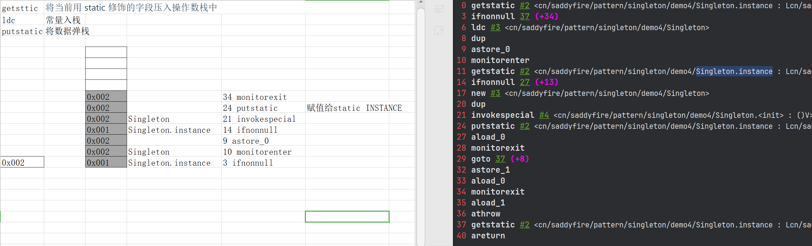

创建型模式
创建型模式的主要关注点是“怎样创建对象？”，它的主要特点是“将对象的创建与使用分离”。
这样可以降低系统的耦合度，使用者不需要关注对象的创建细节。
创建型模式分为：
- 单例模式
- 工厂方法模式
- 抽象工厂模式
- 原型模式
- 建造者模式
单例设计模式
单例模式（Singleton Pattern）是 Java 中最简单的设计模式之一。这种类型的设计模式属于创建型模式，它提供了一种创建对象的最佳方式。
这种模式涉及到一个单一的类，该类负责创建自己的对象，同时确保只有单个对象被创建。这个类提供了一种访问其唯一的对象的方式，可以直接访问，不需要实例化该类的对象。
1-单例模式的结构
单例模式的主要有以下角色：
- 单例类。只能创建一个实例的类
- 访问类。使用单例类
2-单例模式的实现
单例设计模式分类两种：
- 饿汉式：类加载就会导致该单实例对象被创建
- 懒汉式：类加载不会导致该单实例对象被创建，而是首次使用该对象时才会创建
① 静态变量(饿汉式)
//饿汉式： 静态成员变量
public class Singleton {
//1，私有构造方法
private Singleton() {}
//2，在本类中创建本类对象
private static Singleton instance = new Singleton();
//3，提供一个公共的访问方式，让外界获取该对象
public static Singleton getInstance() {
return instance;
}
}说明：
该方式在成员位置声明 Singleton 类型的静态变量，并创建 Singleton 类的对象 instance。instance 对象是随着类的加载而创建的。如果该对象足够大的话，而一直没有使用就会造成内存的浪费。
② 静态代码块(饿汉式)
//饿汉式 ： 静态代码块
public class Singleton {
//私有构造方法
private Singleton() {}
//声明Singleton类型的变量
private static Singleton instance; //null
//在静态代码块中进行赋值
static {
instance = new Singleton();
}
//对外提供获取该类对象的方法
public static Singleton getInstance() {
return instance;
}
}
说明：
该方式在成员位置声明 Singleton 类型的静态变量，而对象的创建是在静态代码块中，也是对着类的加载而创建。所以和饿汉式的方式1基本上一样，当然该方式也存在内存浪费问题。
③ synchronized(懒汉式)
public class Singleton {
//私有构造方法
private Singleton() {}
//声明Singleton类型的变量instance
private static Singleton instance; //只是声明一个该类型的变量，并没有进行赋值
//对外提供访问方式(加锁)
public static synchronized Singleton getInstance() {
//判断instance是否为null，如果为null，说明还没有创建Singleton类的对象
//如果没有，创建一个并返回，如果有，直接返回
if(instance == null) {
//线程1等待，线程2获取到cpu的执行权，也会进入到该判断里面
instance = new Singleton();
}
return instance;
}
}说明：
该方式也实现了懒加载效果，同时又解决了线程安全问题。但是在 getInstance() 方法上添加了 synchronized 关键字，导致该方法的执行效果特别低。从上面代码我们可以看出，其实就是在初始化 instance 的时候才会出现线程安全问题，一旦初始化完成就不存在了。
④ 双重检查锁(懒汉式)👍
再来讨论一下懒汉模式中加锁的问题，对于 getInstance() 方法来说，绝大部分的操作都是读操作，读操作是线程安全的，所以我们没必让每个线程必须持有锁才能调用该方法，我们需要调整加锁的时机。由此也产生了一种新的实现模式：双重检查锁模式
code-double-checked
public class Singleton {
//私有构造方法
private Singleton() {}
//声明Singleton类型的变量
private static volatile Singleton instance;
//对外提供公共的访问方式
public static Singleton getInstance() {
//第一次判断，如果instance的值不为null，不需要抢占锁，直接返回对象
if(instance == null) {
synchronized (Singleton.class) {
//也许有其它线程已经创建实例，所以再判断一次
if(instance == null) {
instance = new Singleton();
}
}
}
return instance;
}
}双重检查锁模式是一种非常好的单例实现模式，解决了单例、性能、线程安全问题，上面的双重检测锁模式看上去完美无缺，其实是存在问题，在多线程的情况下，可能会出现空指针问题，出现问题的原因是 JVM 在实例化对象的时候会进行优化和指令重排序操作。
要解决双重检查锁模式带来空指针异常的问题，只需要使用 volatile 关键字, volatile 关键字可以保证可见性和有序性。
小结：
添加 volatile 关键字之后的双重检查锁模式是一种比较好的单例实现模式，能够保证在多线程的情况下线程安全也不会有性能问题。
④ 补充(指令重排)👍

其中:
- 17 new 表示创建对象，将对象引用入栈 // new Singleton
- 20 dup 表示复制一份对象引用 // 引用地址
- 21 invokespecial 表示利用一个对象引用，调用构造方法
- 24 putstatic 表示利用一个对象引用，赋值给 static INSTANCE
也许 JVM 会优化为：先执行 24，再执行 21。如果两个线程 t1，t2 按如下时间序列执行：
sequenceDiagram participant t1 as t1 participant I as INSTANCE participant t2 as t2 t1 ->> t1: 17: new t1 ->> t1: 20: dup t1 ->> I: 24: putstatic(给 INSTANCE 赋值) t2 ->> I: 0: getstatic(获取 INSTANCE 引用) t2 ->> t2: 3: ifnonull 37(判断不为空, 跳转 37 行) t2 ->> I: 37: getstatic(获取 INSTANCE 引用) t2 ->> t2: 40: return(返回) t2 ->> t2: 使用对象 t1 ->> t1: 21: invokespecial(调用构造方法)
关键在于 0: getstatic 这行代码在 monitor 控制之外，它就像之前举例中不守规则的人，可以越过 monitor 读取 INSTANCE 变量的值
这时 t1 还未完全将构造方法执行完毕，如果在构造方法中要执行很多初始化操作，那么 t2 拿到的是将是一个未初始化完毕的单例
对 INSTANCE 使用 volatile 修饰即可，可以禁用指令重排，但要注意在 JDK5 以上的版本的 volatile 才会真正有效
加入 volatile 后效果
#------------------->加入对 INSTANCE 变量的读屏障
0 getstatic #2
3 ifnonnull 37 (+34)
6 ldc #3
8 dup
9 astore_0
10 monitorenter
11 getstatic #2
14 ifnonnull 27 (+13)
17 new #3
20 dup
21 invokespecial #4
24 putstatic #2
#------------------>加入对 INSTANCE 变量的写屏障
27 aload_0
28 monitorexit #--->保证原子性、可见性
29 goto 37 (+8)
32 astore_1
33 aload_0
34 monitorexit
35 aload_1
36 athrow
37 getstatic #2
40 areturn如上面的注释内容所示，读写 volatile 变量时会加入内存屏障（Memory Barrier（Memory Fence）），保证下面两点：
- 可见性
- 写屏障（sfence）保证在该屏障之前的 t1 对共享变量的改动，都同步到主存当中
- 而读屏障（lfence）保证在该屏障之后 t2 对共享变量的读取，加载的是主存中最新数据
- 有序性
- 写屏障会确保指令重排序时，不会将写屏障之前的代码排在写屏障之后(我写我后写)
- 读屏障会确保指令重排序时，不会将读屏障之后的代码排在读屏障之前(我读我先读)
- 更底层是读写变量时使用 lock 指令来多核 CPU 之间的可见性与有序性
sequenceDiagram participant t1 as t1 participant I as INSTANCE participant t2 as t2 t1 ->> t1: 17: new t1 ->> t1: 20: dup t1 ->> t1: 21: invokespecial(调用构造方法) t2 --x I: 0: getstatic(获取 INSTANCE 引用, 带读屏障) t1 --x I: 24: putstatic(给 INSTANCE 赋值, 带写屏障) t2 ->> t2: 3: ifnonull 37(判断不为空, 跳转 37 行) t2 --x I: 37: getstatic(获取 INSTANCE 引用) t2 ->> t2: 40: return(返回) t2 ->> t2: 使用对象
⑤ 静态内部类(懒汉式)👍
静态内部类单例模式中实例由内部类创建，由于 JVM 在加载外部类的过程中, 是不会加载静态内部类的, 只有内部类的属性/方法被调用时才会被加载, 并初始化其静态属性。静态属性由于被 static 修饰，保证只被实例化一次，并且严格保证实例化顺序。
code-static-inner-class
public class Singleton {
//私有构造方法
private Singleton() {}
//定义一个静态内部类
private static class SingletonHolder {
//在内部类中声明并初始化外部类的对象
private static final Singleton INSTANCE = new Singleton();//
}
//提供公共的访问方式
public static Singleton getInstance() {
return SingletonHolder.INSTANCE;
}
}
说明：
第一次加载 Singleton 类时不会去初始化 INSTANCE，只有第一次调用 getInstance()，虚拟机加载 SingletonHolder
并初始化 INSTANCE，这样不仅能确保线程安全，也能保证 Singleton 类的唯一性。
小结：
静态内部类单例模式是一种优秀的单例模式，是开源项目中比较常用的一种单例模式。在没有加任何锁的情况下，保证了多线程下的安全，并且没有任何性能影响和空间的浪费。
⑥ 枚举(饿汉式)
枚举类实现单例模式是极力推荐的单例实现模式，因为枚举类型是线程安全的，并且只会装载一次，设计者充分的利用了枚举的这个特性来实现单例模式，枚举的写法非常简单，而且枚举类型是所用单例实现中唯一一种不会被破坏的单例实现模式。
/**
* 枚举方式
*/
public enum Singleton {
INSTANCE;
}说明：
枚举方式属于恶汉式方式。
3-存在的问题
破坏单例模式
使上面定义的单例类（Singleton）可以创建多个对象，枚举方式除外。有两种方式，分别是序列化和反射。
Ⅰ 序列化反序列化
Singleton类：
Test类
public class DestroySingletonTest {
public static void main(String[] args) throws Exception {
// writeObject2File(); //1.先写数据
readObjectFromFile(); //2.多次读数据
readObjectFromFile(); //2.多次读数据
}
//从文件读取数据（对象）
public static void readObjectFromFile() throws Exception {
//1,创建对象输入流对象
ObjectInputStream ois = new ObjectInputStream(new FileInputStream("C:\\Users\\Think\\Desktop\\a.txt"));
//2,读取对象
Singleton instance = (Singleton) ois.readObject();
System.out.println(instance);
//释放资源
ois.close();
}
//向文件中写数据（对象）
public static void writeObject2File() throws Exception {
//1,获取Singleton对象
Singleton instance = Singleton.getInstance();
//2,创建对象输出流对象
ObjectOutputStream oos = new ObjectOutputStream(new FileOutputStream("./a.txt"));
//3,写对象
oos.writeObject(instance);
//4,释放资源
oos.close();
}
}Ⅱ 反射
Singleton类：
public class DestroySingletionTest {
public static void main(String[] args) throws Exception {
//1,获取Singleton的字节码对象
Class clazz = Singleton.class;
//2,获取无参构造方法对象
Constructor cons = clazz.getDeclaredConstructor();
//3,取消访问检查
cons.setAccessible(true);
//4,创建Singleton对象
Singleton s1 = (Singleton) cons.newInstance();
Singleton s2 = (Singleton) cons.newInstance();
System.out.println(s1 == s2); //如果返回的是true，说明并没有破坏单例模式，如果是false，说明破坏了单例模式
}
}防止破解办法
Ⅰ 序列化、反序列破解
在 Singleton 类中添加 readResolve() 方法，在反序列化时被反射调用，如果定义了这个方法，就返回这个方法的值，如果没有定义，则返回新 new 出来的对象。
public class Singleton implements Serializable {
//私有构造方法
private Singleton() {}
//定义一个静态内部类
private static class SingletonHolder {
//在内部类中声明并初始化外部类的对象
private static final Singleton INSTANCE = new Singleton();
}
//提供公共的访问方式
public static Singleton getInstance() {
return SingletonHolder.INSTANCE;
}
//当进行反序列化时，会自动调用该方法，将该方法的返回值直接返回👍
public Object readResolve() {
return SingletonHolder.INSTANCE;
}
}源码解析
ObjectInputStream 类
...
readObject();
readObject0(false);
readOrdinaryObject(unshared)
...
//判断是否有 readResolve() 方法
if (obj != null &&
handles.lookupException(passHandle) == null &&
desc.hasReadResolveMethod())
{
Object rep = desc.invokeReadResolve(obj);
...
}Ⅱ 反射破解
public class Singleton {
private static boolean flag = false;
//私有构造方法
private Singleton() {
synchronized (Singleton.class) {
//判断flag的值是否是true，如果是true，说明非第一次访问，直接抛一个异常，如果是false的话，说明第一次访问
if (flag) {
throw new RuntimeException("不能创建多个对象");
}
//将flag的值设置为true
flag = true;
}
}
//定义一个静态内部类
private static class SingletonHolder {
//在内部类中声明并初始化外部类的对象
private static final Singleton INSTANCE = new Singleton();
}
//提供公共的访问方式
public static Singleton getInstance() {
return SingletonHolder.INSTANCE;
}
}说明:
这种方式比较好理解。当通过反射方式调用构造方法进行创建创建时，直接抛异常。不运行此中操作。
4-JDK 单例模式案例(Runtime)
Runtime类就是使用的单例设计模式。
源码
public class Runtime {
private static Runtime currentRuntime = new Runtime();
public static Runtime getRuntime() {
return currentRuntime;
}
private Runtime() {}
...
}从上面源代码中可以看出 Runtime 类使用的是恶汉式（静态属性）方式来实现单例模式的。
使用 Runtime 类中的方法
public class RuntimeDemo {
public static void main(String[] args) throws IOException {
//获取Runtime类的对象
Runtime runtime = Runtime.getRuntime();
//调用runtime的方法exec, 参数要的是一个命令
Process process = runtime.exec("ipconfig");
//调用process对象的获取输入流的方法
InputStream is = process.getInputStream();
byte[] arr = new byte[1024 * 1024 * 100];//100M
//读取数据
int len = is.read(arr);//返回读到的字节的个数
//将字节数组转换为字符串输出到控制台
System.out.println(new String(arr,0,len,"GBK"));
}
}